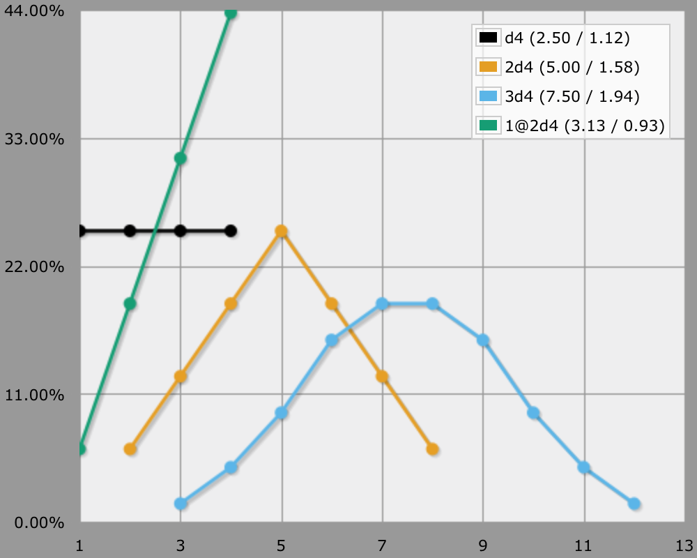

Dice and Averages
Sums and Sequences
How do you calculate the average of something? You add lowest and highest, then divide that by two, right? Well, yes, but that's actually a special case. How do you calculate the average of an unconstrained collection of values, in general?

In the general case, you sum all elements of the collection, then divide that by the number of elements. For example, a d4 represents the collection {1,2,3,4}, therefore its average is `(1 + 2 + 3 + 4) / 4 = 10/4 = 2.5`.
This works for multiple dice as well. 2d4 represents the collection {2,3,3,4,4,4,5,5,5,5,6,6,6,7,7,8}, so its average is `(2 + 3*2 + 4*3 + 5*4 + 6*3 + 7*2 + 8) / 16 = 80/16 = 5`.
You can use it for more exotic cases as well, for example taking the highest of 2d4. It represents the collection {1,2,2,2,3,3,3,3,3,4,4,4,4,4,4,4} and so its average is `(1 + 2*3 + 3*5 + 4*7) / 16 = 50/16 = 3.125`.
So if you know how often each element occurs, then you can calculate the average, no matter how strange the distribution.
But what if you don't know exactly how often each number occurs, but only know the odds per value? That's not a problem. The difference is that the division at the end has already been done for you. You only have to sum the values multiplied by their odds. For example, when taking the highest of 2d4 you'll get `1/16 + 2*3/16 + 3*5/16 + 4*7/16 = 50/16 = 3.125`.
The Special Case
If you want to sum a straight sequence of `1 + 2 + 3 + … + n`, then you can use the famous formula `sum_(i=1)^n i = (n(n+1))/2`. It works because it takes advantage of the symmetry of the problem. You can calculate it like (lowest + highest) + (2nd lowest + 2nd highest) + … up to the middle. So you end up with `n/2` pairs that equal `n + 1`, plus a lonely middle value equal to `(n+1)/2` in case `n` is odd. As in this case `n` is also the number of elements, to get the average you have to divide the sum by `n`. So the average becomes `(n(n+1))/(2n) = (n+1)/2`. But the straight sequence doesn't need to start at 1, so you get the common formula `(l + h) / 2`.
This simple formula works for 1d4, but does it also work for 2d4, 3d4, etcetera? Yes it does! The average for 2d4 is `(2+8)/2=5` and the average for 3d4 is `(3+12)/2=7.5`. It works for any distribution that is symmetrical around its average. In those cases you can ignore the odds of the individual elements and treat is as a simple linear range. In all other cases you can use the general approach.